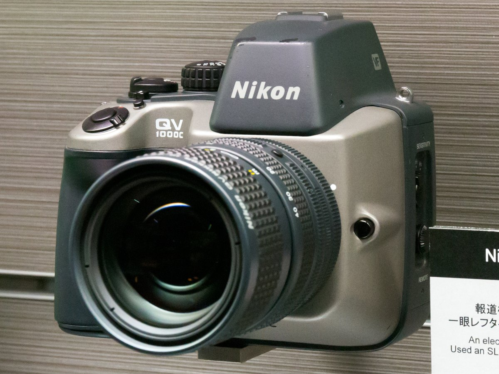

Nikon QV-1000C
Shoot to a floppy disk, pop it into a transmitter, clamp on the acoustic coupler, and phone your photo across the country in minutes

Overview
Announced August 26, 1988, the Nikon QV-1000C was Nikon's first filmless camera and a purpose-built professional still-video system. It recorded up to fifty frames onto a reusable 2-inch magnetic video floppy disk (the S-VHS Video Floppy format) that could be ejected and re-shot thousands of times, eliminating film and processing entirely. The camera captured a frame in roughly 1/1000th of a second and stored it as an NTSC analog signal requiring no chemical development.
For transmission, the disk was inserted into the separate QT-1000C transmitter, which established a phone connection through an acoustic coupler — a cradle holding the telephone handset so audio tones carried the image data across the ordinary public switched telephone network. This made the QV-1000C a complete remote-photojournalism chain: camera, disk, transmitter, acoustic coupler and phone. Where Sony's Mavica prototype stopped at capture-and-review, the QV-1000C was a full press workflow for getting a picture from the field to the newsroom in minutes.
Deep dive
Still images lived on a reusable 2-inch magnetic disk holding up to 50 NTSC frames. The disk is physically ejected from the camera, carried to the transmitter, and reused indefinitely — the medium itself was the message: filmless, rewritable, and instantly transmittable. This extends the still-video category begun by the museum's Sony Mavica (1981 prototype).
The disk went into the transmission unit, which dialed out through an acoustic coupler — you clamped the telephone handset onto the cradle and the image traveled as audio tones across the phone network. A visible, physical manifestation of early digital telephony and a preview of mobile data.
Nikon marketed the QV-1000C to newspapers and agencies as a total system. It is best understood as an interaction chain — capture, carry the medium, dial, clamp, transmit — rather than as a single camera. Its distinctive contribution over the Mavica prototype is precisely this end-to-end transmission ritual.
The QV-1000C foreshadows today's instant-digital-photo paradigm, but with the eccentric embodied steps of physically handing a disk between devices and coupling it to a handset. It stands as a compact example of photography becoming a networked, software-mediated act.
Team & pioneers
- Nikon Corporation. Japanese camera and optics manufacturer, Tokyo; announced the QV-1000C on August 26, 1988.